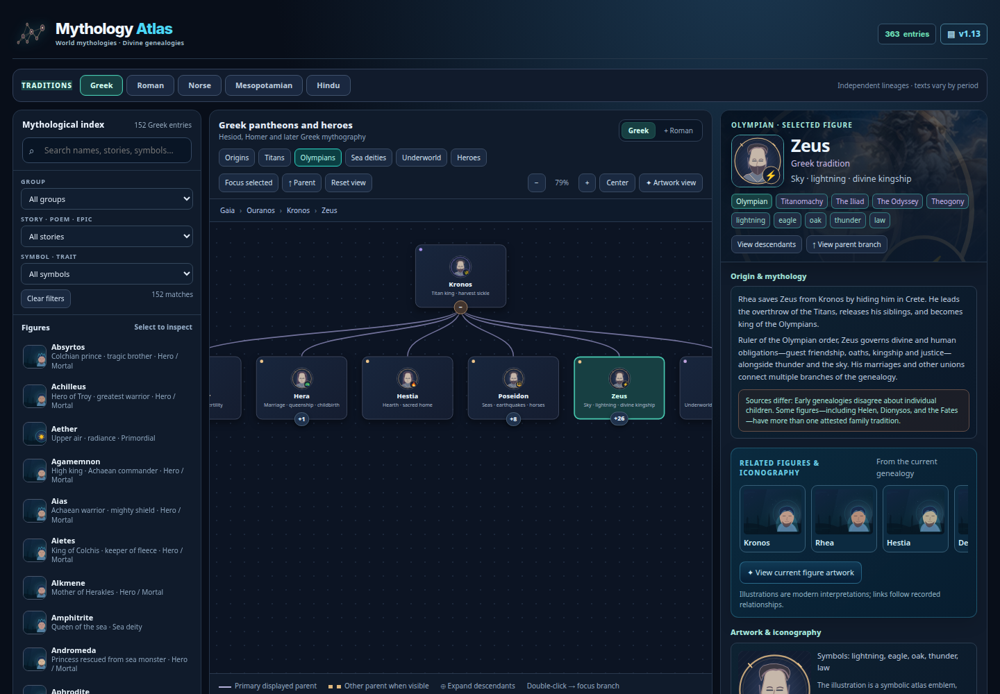

Actual · fresh browser capture

Original widget source unchanged. External HTTP(S) requests blocked for this offline capture.
Goal reference
goal_1.png · approved visual direction
goal_2.png · approved visual direction
Complete · 5
- WL-001 · p1 · done
Import and verify the Atlas baseline. - WL-003 · p1 · done
Maintain a categorized, prioritized live backlog. - WL-004 · p1 · done
Produce actual-versus-goal evidence and open it in feh. - WL-005 · p1 · done
Exercise Atlas browser interactions before visual refactoring. - WL-010 · p1 · done
Guard browser evidence against incomplete coverage and stale sources.
Pending / verify · 32
- WL-006 · p1 · approved
Refine the goal-image layout without scientific regressions. - T001 · p1 · needs-verification
Verify existing: Retain compact one-line title/subtitle with responsive natural wrap. - T005 · p1 · needs-verification
Verify existing: Preserve historical changelog entries and click-to-expand version control. - T006 · p1 · needs-verification
Verify existing: Compact statistics typography and balanced rows. - T010 · p1 · proposed
Automate regression for header, popup, versions and mobile breakpoints. - T002 · p1 · proposed
Apply consistent navy gradient with subtle colored subject identity. - T003 · p1 · proposed
Match illustrated reference icon scale and clarity. - T004 · p1 · needs-verification
Verify existing: Align version and data chips, equal control heights. - T007 · p1 · needs-verification
Verify existing: Unify overlay spacing and one-row title/close control. - T008 · p1 · proposed
Consolidate hover/active/selected/focus styles and common green stat emphasis. - I001 · p1 · triage
Close remaining header/hero visual gap. - S022 · p1 · proposed
Standard keyboard, reduced-motion and visual-contrast test plan. - T009 · p2 · proposed
Match reference luminous panel edges and restrained atmospheric fills. - I026 · p2 · triage
Keyboard, contrast and responsive coverage is not maintained as a uniform regression matrix. - T040 · p1 · needs-verification
Verify existing: Provide local illustration for all 363 indexed records. - T041 · p1 · proposed
Cinematic selected-figure hero art with readable left-aligned text. - T042 · p1 · proposed
Commission/generate distinctive iconography for 33 flagship figures. - T043 · p1 · needs-verification
Verify existing: Preserve switchable family tree and artwork views. - T044 · p1 · needs-verification
Verify existing: Keep tradition filters, search, genealogy, parent and child navigation. - T048 · p1 · needs-verification
Verify existing: Greek/Roman name toggles with independent traditions. - T049 · p1 · proposed
Artwork type and historical accuracy provenance visible. - T050 · p1 · needs-verification
Verify existing: Keep shared teal/green active states while letting paintings vary by tradition. - S005 · p1 · proposed
Cinematic profile and richer right-side relationships. - T045 · p1 · needs-verification
Verify existing: Figure result thumbnails with selected treatment. - T046 · p1 · proposed
Rich illustrated right-side figure facts, attribution and relations. - T047 · p1 · proposed
Clickable related-artwork thumbnails/carousel. - T051 · p1 · proposed
Matching pills for lineage, epics, symbols and role. - I004 · p1 · triage
More tradition-specific hero portraits. - I005 · p1 · triage
Separate related figures from linked historical artwork. - S006 · p1 · proposed
Licensed related-artwork gallery. - S021 · p1 · proposed
Separate generated narrative portraits from documented historical artwork. - T052 · p2 · proposed
Improve person/entity equivalents, variant myths and sources.